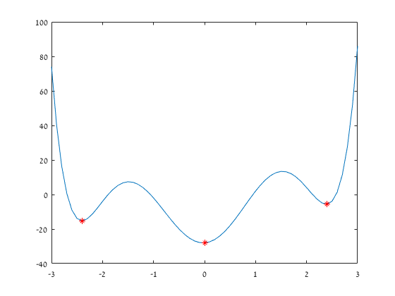

ID = 316098052; disp(ID)
316098052
1. Scalar Arithmetic 1
3*2^4 % 2 (3*2)^4 % 3 3-2^4 % 4 3^4-3 % 5 8/2^4 % 6 2^4\8 % 7 8^4/2
ans =
48
ans =
1296
ans =
-13
ans =
78
ans =
0.5000
ans =
0.5000
ans =
2048
2. Vector 1
x = [3 4 7 11] % 2 x = 3:8 % 3 x = 8:-1:0 % 4 xx = [8 7 6 5 4 3 2 1 0]; % 5 xx % 6 x = linspace(0,1,11) % 7 x = 0:0.1:1 % 8 y = linspace(0,1); % 9 length(x) % 10 length(y) % 11 size(x) % 12 size(y) % 13 y(3) % 14 y(1:12) % 15 y([3 6 9 12]) % 16 x' % 17 z = [1+2j 4-3j] % 18 z' % 19 z.' % 20 3*[1 2 5]
x =
3 4 7 11
x =
3 4 5 6 7 8
x =
8 7 6 5 4 3 2 1 0
xx =
8 7 6 5 4 3 2 1 0
x =
Columns 1 through 7
0 0.1000 0.2000 0.3000 0.4000 0.5000 0.6000
Columns 8 through 11
0.7000 0.8000 0.9000 1.0000
x =
Columns 1 through 7
0 0.1000 0.2000 0.3000 0.4000 0.5000 0.6000
Columns 8 through 11
0.7000 0.8000 0.9000 1.0000
ans =
11
ans =
100
ans =
1 11
ans =
1 100
ans =
0.0202
ans =
Columns 1 through 7
0 0.0101 0.0202 0.0303 0.0404 0.0505 0.0606
Columns 8 through 12
0.0707 0.0808 0.0909 0.1010 0.1111
ans =
0.0202 0.0505 0.0808 0.1111
ans =
0
0.1000
0.2000
0.3000
0.4000
0.5000
0.6000
0.7000
0.8000
0.9000
1.0000
z =
1.0000 + 2.0000i 4.0000 - 3.0000i
ans =
1.0000 - 2.0000i
4.0000 + 3.0000i
ans =
1.0000 + 2.0000i
4.0000 - 3.0000i
ans =
3 6 15
3. Matrix arithmetic
A = [3 1 5; 7 4 2; 7 6 8] b = [1;2;3] C = [1 0 0] % 1 A^-1 % 2 transpose(A) A.' % 3 A*b % 4 b.'*A % 5 A.'*b % 6 Ct = [b A*b A^2*b] % 7 Ot = [C ; C*A; C*A^2] % 8 exp(A) % 9 rank(Ot) % 10 rank(Ct) % 11 eig(A) % 12 [V, D] = eig(A) % V - eigen-vectors of A % 13 eig(Ct) % 14 [V, D] = eig(Ct) % V - eigen-vectors of Ct % 15 eig(Ot) % 16 [V, D] = eig(Ot) % V - eigen-vectors of Ct % 17 Ot.*Ct
A =
3 1 5
7 4 2
7 6 8
b =
1
2
3
C =
1 0 0
ans =
0.2273 0.2500 -0.2045
-0.4773 -0.1250 0.3295
0.1591 -0.1250 0.0568
ans =
3 7 7
1 4 6
5 2 8
ans =
3 7 7
1 4 6
5 2 8
ans =
20
21
43
ans =
38 27 33
ans =
38
27
33
Ct =
1 20 296
2 21 310
3 43 610
Ot =
1 0 0
3 1 5
51 37 57
ans =
1.0e+03 *
0.0201 0.0027 0.1484
1.0966 0.0546 0.0074
1.0966 0.4034 2.9810
ans =
3
ans =
3
ans =
14.4526 + 0.0000i
0.2737 + 2.4523i
0.2737 - 2.4523i
V =
0.3937 + 0.0000i -0.3620 + 0.3725i -0.3620 - 0.3725i
0.4201 + 0.0000i 0.7529 + 0.0000i 0.7529 + 0.0000i
0.8177 + 0.0000i -0.1359 - 0.3806i -0.1359 + 0.3806i
D =
14.4526 + 0.0000i 0.0000 + 0.0000i 0.0000 + 0.0000i
0.0000 + 0.0000i 0.2737 + 2.4523i 0.0000 + 0.0000i
0.0000 + 0.0000i 0.0000 + 0.0000i 0.2737 - 2.4523i
ans =
1.0e+02 *
6.3329 + 0.0000i
-0.0065 + 0.0059i
-0.0065 - 0.0059i
V =
-0.3964 + 0.0000i 0.8023 + 0.0000i 0.8023 + 0.0000i
-0.4157 + 0.0000i 0.1684 - 0.5711i 0.1684 + 0.5711i
-0.8186 + 0.0000i -0.0158 + 0.0402i -0.0158 - 0.0402i
D =
1.0e+02 *
6.3329 + 0.0000i 0.0000 + 0.0000i 0.0000 + 0.0000i
0.0000 + 0.0000i -0.0065 + 0.0059i 0.0000 + 0.0000i
0.0000 + 0.0000i 0.0000 + 0.0000i -0.0065 - 0.0059i
ans =
60.1288
-2.1288
1.0000
V =
0 0 0.7953
0.0843 0.8477 -0.3740
0.9964 -0.5305 -0.4772
D =
60.1288 0 0
0 -2.1288 0
0 0 1.0000
ans =
1 0 0
6 21 1550
153 1591 34770
4.1 Orthogonal Matrix Function
A = eye(3)
Ort_mat(A)
% 4.2 Replace values in a matrix
M = Replace_mat(A,1,2)
A =
1 0 0
0 1 0
0 0 1
ans =
1
M =
2 0 0
0 2 0
0 0 2
5. Polynomials
p = [1 0 -12 0 39 2 -28]; x = -3:0.1:3; y = polyval(p,x); % 1 plot(x,y) % 2 r = roots(p) % 3 TF = islocalmin(y); % 4 plot(x,y,x(TF),y(TF),'r*') function ans = Ort_mat(x) if x' == x^-1 ans = 1; else ans = 0; end end function B = Replace_mat(A,u,v) Mask = A==u; B =A.*not(Mask)+ Mask*v; end
r =
-2.6951
2.5800
2.1173
-1.8898
-1.0610
0.9485
